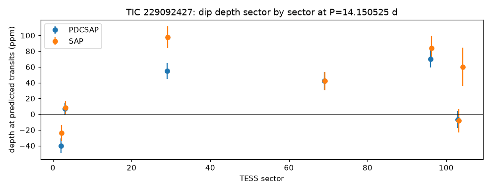
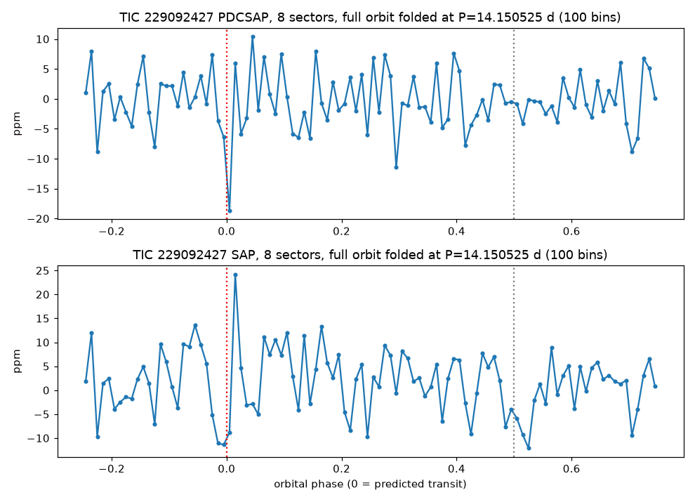

TRANSMISSION #023 ·
Deep dive on nu Phoenicis: an Earth-sized dip that skips half its sectors
Follow-up on TIC 229092427, better known as nu Phoenicis (HD 7570), from the first sector 104 draw.
nu Phe is a magnitude 4.4 F-type star about 1.26 times the Sun's size, bright enough to see without a telescope from the southern hemisphere. Using four sectors (29, 69, 96 and 106), the batch search found a 57 ppm dip every 14.15 days, two hours long, five transits, signal-to-noise 10.3. That would mean a planet about Earth's size. Odd and even dips matched (59 and 55 ppm) and nothing showed at the halfway point. The batch also found two other signals on the same star, at 15.37 and 12.74 days with similar depths. Both failed, and the periodogram climbs toward long periods. A forest of near-equal peaks like that is what noise looks like.
The deep TLS search used all eight sectors, adding 2 and 3 from 2018 plus 103 and 104 from this year. It found nothing above threshold. Its best guess was 1.18 days with a detection score of 8.5.
Measured directly at the predicted times, the dip shows up in three sectors: 55, 42 and 70 ppm in the cleaned light curves for sectors 29, 69 and 96. Everywhere else it's missing. Sector 2 gives -40 ppm, a slight brightening, sector 3 gives 7 ppm and sector 103 gives -7 ppm, each with uncertainties near 10 ppm. A real transit should be about 57 ppm in all of them. Folding the full orbit shows a single 18 ppm low point inside scatter of about 15 ppm.


Neighbours can't be blamed here. Everything within 90 arcseconds is around magnitude 20, about fifteen magnitudes fainter, and couldn't fake even a 57 ppm dip. Gaia's RUWE is 1.38, at the edge of normal. ExoFOP and the NASA Exoplanet Archive have nothing on or near the star.
With the dip missing from three of six sectors and the deep search finding nothing, this looks like noise in a very bright star's light curve. Marked probably false positive.
Full pipeline report
Planet-hunter report
Generated 2026-11-03 10:17 UTC by hunt.py v1.0.0.
Stars processed
1 stars total: 1 no_signal
Signals found: 0 (0 new and passing vetting, 0 new but failing vetting, 0 matching known planets/TOIs/CTOIs).
New candidates that passed the automatic checks
These are the ones to look at first. Passing the automatic checks does not make something a planet. Open each plot and follow the eyeball checklist in BOT_BRIEF.md before telling anyone about it.
none
New signals that failed vetting
Usually eclipsing binaries, stellar variability or instrument noise. Worth a glance, rarely more.
none
Signals matching something already catalogued
A good sanity check: if the pipeline recovers known planets, it is working.
none
Stars with errors
none
Caveat
A NEW_CANDIDATE here is only a candidate. Most automatic detections in TESS data turn out to be eclipsing binaries (often a nearby star blended into the same pixels), stellar activity or systematics. Confirming a planet needs pixel-level checks, follow-up photometry, and usually spectroscopy. Promising, carefully checked signals can be shared on ExoFOP (as a CTOI) or with Planet Hunters TESS.